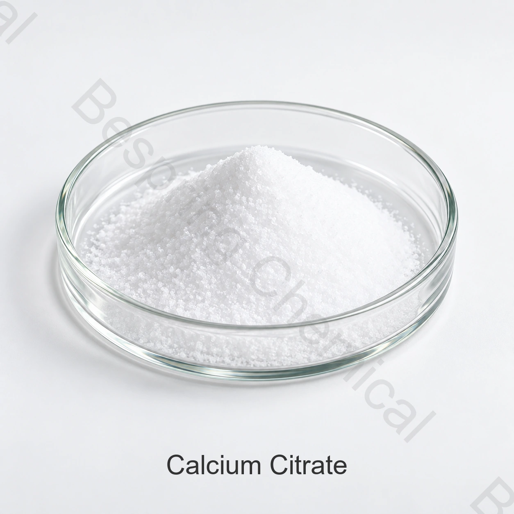

Pháo đài Calcium
Được dùng làm nguồn can - xi để cung cấp thức ăn, thức uống, tiền kê và phụ tùng.
Thành phần cấp thực phẩm · Citrate muối # INS 333 (iiii)
Cacium citrate là một muối can-xi của axit citric được dùng trong các thực phẩm thích hợp và bổ sung cho việc canh tác can-xi, đệm và hỗ trợ hình thức.

Hình minh họa sản phẩm · cấp chất lượng và quy cách đóng gói được nêu trong báo giá
Tổng quát sản phẩm
Trích dẫn ngôn ngữ97.5–100.5%
Thu dọn chuẩn25kg
Đối chiếu quy cách đóng gói, số lượng và điều kiện giao hàng trong báo giá của cấp chất lượng được đề xuất.
Điều kiệnComment
Canxi được cung cấp được xác định là ca bốn nước3(C6H5O7)2·4H2O, CAS 5785-44-4. Codex liệt kê canxi citrat là INS 333(iii), trong khi JECFA cũng ghi nhận dạng khan với một số CAS khác.
Giới hạn thương mại được cung cấp phải được tương ứng với điểm chính xác, định loại thức ăn và các quy tắc thị trường đích. Chỉ riêng tên sản phẩm không thiết lập tính theo quy tắc.
Kiểm tra ứng dụng
Xác nhận sử dụng hợp pháp, liều lượng, kỹ thuật hiệu quả và tác động cảm giác vào sản phẩm hoàn chỉnh.
Được dùng làm nguồn can - xi để cung cấp thức ăn, thức uống, tiền kê và phụ tùng.
Có thể hỗ trợ axit và sự cân bằng khoáng sản trong việc hình thành các dạng tương thích.
Hợp chất có thể tương tác với các khối khoáng chất được chọn; xác nhận sự hình thành đầy đủ.
Đánh giá khả năng phù hợp, sự linh hoạt và kết cấu trong sản phẩm thực tế.
Xác định dạng nước, cơ bản là Canxi, kích thước hạt và liều lượng mục tiêu.
Các vết nứt chảy, nén, phân tán và các hiệu ứng giác quan.
Đặc điểm thương mại
Những giới hạn tham khảo thương mại này khác với kết quả COA, tương đương với điểm số, cơ sở phân tích và áp dụng tiêu chuẩn trước khi đặt hàng.
Vuốt hoặc dùng bàn phím để đọc tất cả các cột
| Chỉ tiêu | Chi tiết |
|---|---|
| Chất lỏng trong suốt, cơ sở khô | FCC-IV: 97.5–100.5%; USP24: 97.5–100.5% |
| Thạch tín | FCC-IV/USP24: ≤0.0003% |
| Fluoride | FCC-IV/USP24: ≤0.003% |
| Chất không tan trong axit | FCC-IV/USP24: ≤0.2% |
| Chì (Pb) | FCC-IV: ≤0.0002%; USP24: ≤0.0001% |
| Kim loại nặng, như Pb | USP24: ≤0,002%; vui lòng yêu cầu bản chỉ tiêu FCC-IV |
| Hao hụt khi sấy | FCC-IV: 10.0–14.0%; USP24: 10.0–13.3% |
| Độ ẩm thích hợp | FCC-IV: ≤0.003%; USP24: ≤0.0002% |
| Độ sáng | Yêu cầu bản thông số kỹ thuật cho cấp chất lượng cần mua |
| Diện mạo | Bột trắng hoặc bột tinh thể trắng |
Ghi chú cụ thể: Đề nghị này xác định danh sách hồ sơ liên quan đến Canxi citrate bốnhydrate, CAS 5785-44-4; danh sách hồ sơ liên kết JECFA CAS 813-94-5. Khớp mẫu nước, CAS và assay với tiêu chuẩn được chỉ định cho bạn.
Hỗ trợ độ phân giải
yêu cầu đặc tả/TDS, SDS, phương pháp và đại diện hoặc MRA.
Cho biết cấp chất lượng, hồ sơ, lượng dự kiến, quy cách đóng gói và nơi giao.
ôn lại Hồ sơ dạng cây để xác định ngữ cảnh.
Lưu trữ và xử lý
Hỏi người mua
Cacium citrate là một muối can-xi của axit citric được dùng trong thực phẩm thích hợp và bổ sung cho việc canh tác, hỗ trợ đệm và hình thức.
Đặc điểm tham khảo thương mại liệt kê 97.5–100.5%. Xác nhận đặc điểm đặc trưng đã ký và COA.
Gói tham khảo là 25 kg mỗi túi và thứ tự tối thiểu là 500 kg.
Yêu cầu đặc biệt/TDS, SDS, COA và các chứng nhận chất lượng thực phẩm.
Cung cấp đơn xin cấp cấp nước, đặc điểm, số lượng, đích đến và ngày giao hàng.
Thành phần liên quan
Xem lại nhân dạng, đặc điểm, ứng dụng và chi tiết cho thành phần liên quan này.
Xem lại nhân dạng, đặc điểm, ứng dụng và chi tiết cho thành phần liên quan này.
Xem lại nhân dạng, đặc điểm, ứng dụng và chi tiết cho thành phần liên quan này.
Tìm nguồn dựa trên chỉ tiêu kỹ thuật
Chia sẻ ứng dụng, đặc biệt, số lượng, đóng gói, đích và tài liệu cần thiết.
Nếu không dùng được biểu mẫu, hãy dùng trang liên hệ. Bạn cũng có thể gửi email cho bộ phận kinh doanh.
Cho chúng tôi biết điểm số và điểm đến của anh để chúng tôi có thể xác nhận tài liệu nào có sẵn cho đơn đặt hàng của anh.
Một tham chiếu bên ngoài không phải là một chứng nhận hàng loạt hoặc một đặc điểm sản phẩm Bespring.